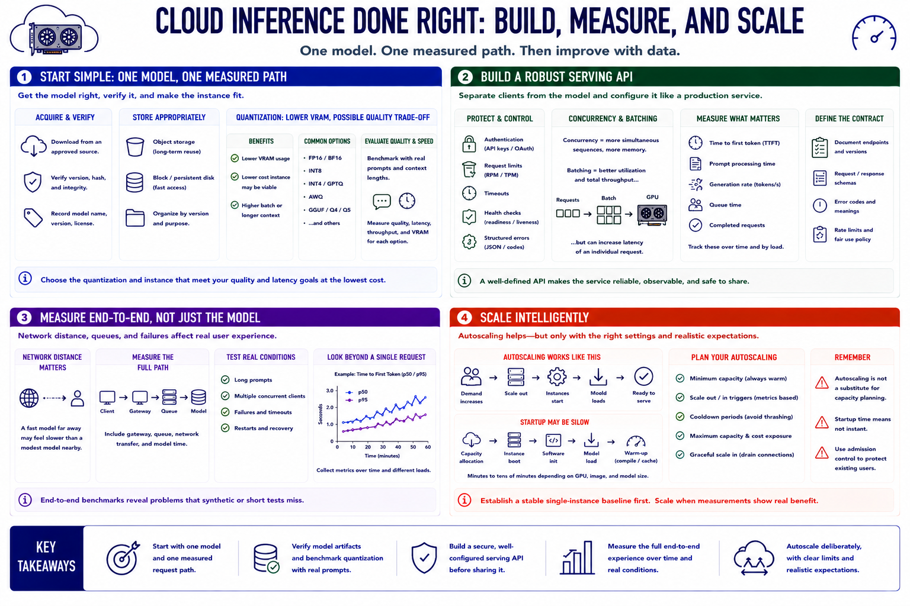

Running Inference in the Cloud
Connecting to LMS... Progress: in progress

Narration
Start cloud inference with one model and one measured request path. Download model artifacts from an approved source, verify the expected version, and place them in storage appropriate to their reuse. Quantization can reduce VRAM demand and make a less expensive instance viable, but it may affect quality. Benchmark candidate quantizations with prompts and context lengths that represent the intended application.
A serving API separates clients from the model process. Configure authentication, request limits, timeouts, health checks, and structured errors before treating it as a shared service. Concurrency increases the number of simultaneous sequences and their memory demand. Batching may improve accelerator utilization and total throughput but can increase the latency of an individual request. Measure time to first token, prompt processing, generation rate, queue time, and completed requests over time.
Network distance matters. A fast model in a distant region may feel slower than a modest model placed near its users and application data. Include gateway, queue, and transfer delays in end-to-end tests. Exercise long prompts, multiple clients, failures, and restart behavior rather than relying on a single short request.
Autoscaling can add or remove instances according to demand, but GPU startup may be slow because capacity must be allocated, software initialized, and models loaded. Define minimum capacity, scale triggers, cooldown periods, and maximum cost exposure. Autoscaling is not a substitute for capacity planning or admission control. Establish a stable single-instance baseline first, then scale when real workload measurements show where additional resources improve service.